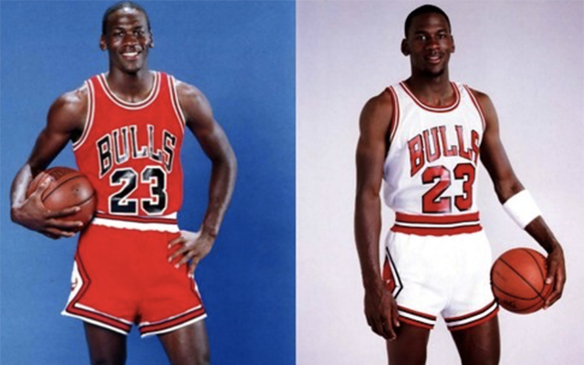
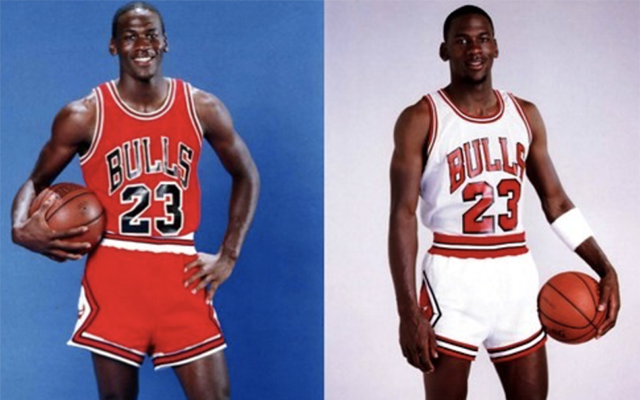

1985
모든 전설의 시작
에어 조던 1
시작부터 게임의 판도를 바꾼 아이콘. 1985년 출시된 에어 조던은 마이클
조던의 대담한 카리스마처럼 순식간에 전 세계를 사로잡았습니다.
등장과 동시에 경기를 장악한 도전 정신
NBA 최초로 다양한 컬러웨이를 선보인 신발로, OG 블랙 앤 레드는 본래
리그 유니폼 규정에 위배된다는 이유로 착용이 금지되었고, 착용할
때마다 벌금 5,000달러가 부과된다는 경고를 받았습니다. 경기의
창의적인 잠재력을 넓히고 농구와 스타일, 문화의 연결 고리를 재정립한
레전드에 경의를 표하는 에어 조던 1 레트로를 통해 OG의 레거시는
여전히 살아 숨 쉬고 있습니다.